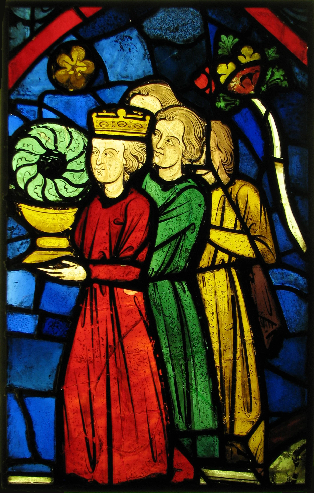
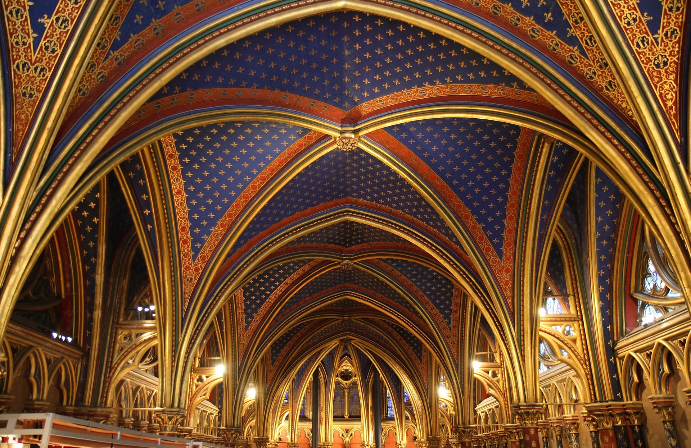
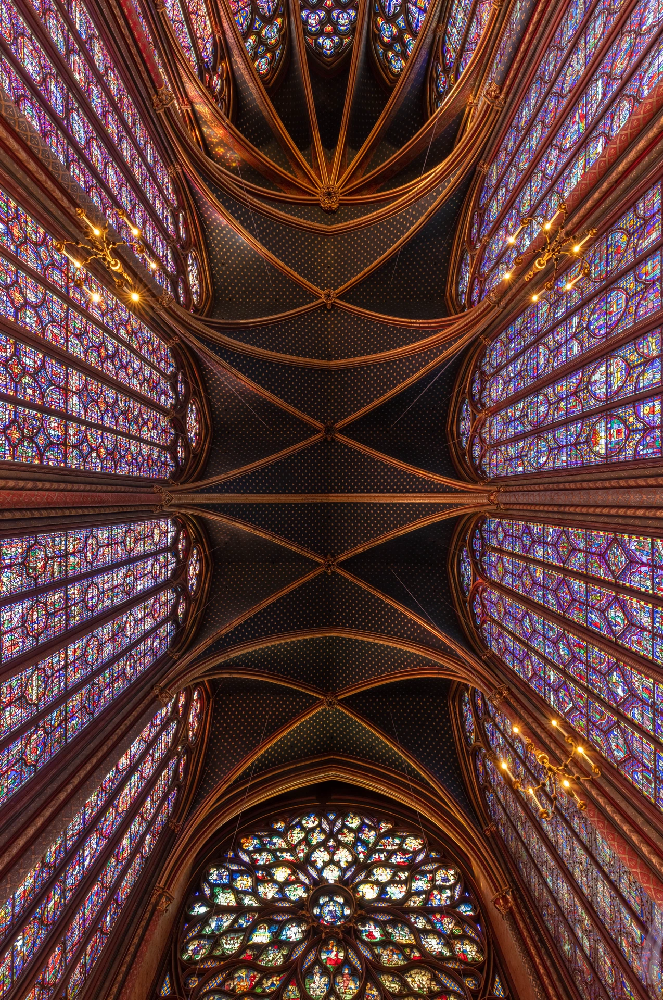
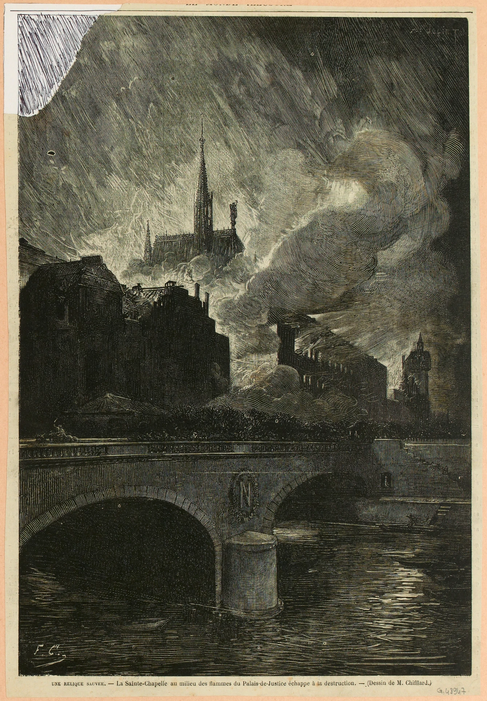

아직 펼치지 않은 카드
아직 펼치지 않은 카드
빛과 돌로 지은 집 · 1생트샤펠이 예배당의 벽은 어디로 갔을까요?벽이 온통 유리야! 벽은 어디 갔을까?
1239~1248년파리 시테섬 · 프랑스
생트샤펠
1239년 여름, 프랑스 왕 루이 9세가 맨발로 가시관을 모셔 왔어요. 그 가시관을 모시려고 왕궁 안에 두 층짜리 예배당을 지어 1248년에 봉헌했어요. 낮은 아래 예배당을 지나 위층에 올라, 어두운 방에 손가락으로 빛을 들여보세요.
왕이 신발을 벗고 소중한 가시관을 모셔 왔대. 그걸 모시려고 지은 예배당이야. 손가락으로 문질러서 깜깜한 방에 빛을 넣어 볼까?
검수 전 시안이에요(기준서 1판). 장면에는 기록에 있는 것만 옮겼고, 기록마다 다른 것은 따로 적었어요. 상상은 ‘눈 감고 상상해 보기’에만 썼어요.
시안 확인용카드 단계 미리 보기
1
맨발의 왕
1238년, 콘스탄티노폴리스의 황제 보두앵 2세가 가시관을 프랑스 왕에게 넘기겠다고 했어요. 그리스도인들이 예수가 십자가에 달릴 때 썼다고 믿어 온 관이에요. 이 가시관은 이미 베네치아 은행가들에게 담보로 잡혀 있었어요.
1239년 8월 10일, 루이 9세는 상스 가까운 마을 빌뇌브라르슈베크에서 가시관을 맞았어요. 왕은 왕의 옷을 벗고 수수한 겉옷 한 벌만 입었어요. 그리고 맨발로, 동생과 함께 가시관을 메고 걸었어요(파리 교구).

그림은 몇 해 뒤인 1245~1248년 무렵 투르에서 만든 유리 그림이에요. 왕관을 쓴 왕이 금빛 잔 위에 초록 가시관을 받쳐 들고, 사람들이 뒤를 따라요. 메트로폴리탄 미술관은 이 장면을 가시관이 상스에 닿은 날로 봐요.
상스 대주교 고티에 코르뉘는 이 행렬에 함께하며 기록을 남겼어요. 8월 19일, 행렬은 파리에 닿았어요. 앞면에서 본 가시관값 13만 5천 리브르는 그때 왕국 한 해 수입의 절반쯤이었어요(생트샤펠 공식 누리집).
왕이 신발을 벗고 맨발로 걸었대. 아주 소중한 가시관을 모시려고!
물어보기아주 소중한 것을 옮길 때, 너라면 어떻게 들고 갈 거야?
2
낮은 아래 예배당
루이 9세는 가시관과 그 뒤에 사들인 성물들을 모시려고 왕궁 안에 예배당을 지었어요. 7년이 안 되어 다 지었고, 1248년 4월 26일에 봉헌했어요.
예배당은 두 층이에요. 아래층은 궁에서 일하는 사람들의 예배당, 위층은 왕과 귀한 손님들의 예배당이었어요. 왕은 궁의 위층 복도를 지나 곧장 위층 예배당으로 들어갔어요(공식 누리집).

오늘 이곳에 오면 먼저 아래 예배당에 들어서요. 천장이 낮고 기둥이 많아 땅속 방처럼 느껴져요. 작은 계단을 올라야 위층 예배당이에요(파리 지역 관광청).
봉헌식 날, 아래 예배당은 성모 마리아께, 위층 예배당은 가시관과 십자가에 바쳤어요(유니베르살리스 백과).
여기는 아래층 예배당이야. 천장이 낮고, 파란 하늘에 금빛 무늬가 가득해!
물어보기천장의 금빛 무늬, 무엇처럼 보여?
3
빛이 차오르는 방
계단 끝 문을 지나면 위층 예배당이에요. 양쪽 벽은 거의 다 색유리 창이에요. 창 15개에 성경 이야기가 1,113장면 담겨 있어요(공식 누리집).
무거운 돌 천장의 무게는 바깥의 버팀벽이 받아요. 쇠막대가 허리띠처럼 건물을 묶어 줘요(스마트히스토리). 그래서 안쪽 벽은 가는 돌기둥만 남기고 유리로 채울 수 있었어요.
위층 예배당 한가운데서 천장을 올려다본 모습이에요. 해가 창에 닿듯, 손가락이나 마우스로 문질러 빛을 들여보세요.

위층 예배당에서 올려다본 창과 천장, 2022년(위쪽이 동쪽, 아래쪽이 서쪽) · 사진: Diego Delso · CC BY-SA 4.0 · 위키미디어 공용
빛이 닿으면 숨은 표시가 나타나요.
창 15개에 빛이 다 들었어요. 생트샤펠 공식 누리집은 빛과 색에 잠긴 이 방을 ‘하늘의 예루살렘’을 떠올리게 하는 곳으로 소개해요.
창 이야기는 북쪽 벽에서 창세기로 시작해요. 동쪽 끝 가운데 창은 예수의 수난, 남쪽 마지막 창은 가시관이 파리에 오는 이야기예요. 서쪽 둥근 장미창은 세상 끝 날의 이야기(요한계시록)로 끝나요(공식 누리집).
공식 누리집은 이 창들이 하나하나 읽으라기보다 한눈에 보라고 만든 것이라고 소개해요. 창의 첫 일은 빛을 들이는 것이었어요.
벽이 거의 다 유리야! 손가락으로 문질러서 빛을 넣어 볼까?
물어보기빛이 들어오니 무슨 색이 가장 많이 보여?
4
꺼졌던 빛
프랑스 혁명 뒤 왕의 예배당은 쓸모를 잃었어요. 큰 성물함은 녹여졌고, 예배당은 밀가루 창고가 되었어요. 1803년부터 1838년까지는 법원 문서를 쌓아 두는 곳이었어요(공식 누리집).
문서 창고로 쓰는 동안 창의 아랫부분을 떼어 냈어요(국립기념물센터). 떼어 낸 유리 가운데 일부는 미술 시장으로 흩어졌고, 특히 영국으로 많이 건너갔어요(공식 누리집).

사진 속 네 잎 모양 유리도 1803년에 떼어 내 팔린 조각이에요. 동쪽 끝 창에 있던 다니엘 이야기의 한 장면이에요. 지금은 런던 빅토리아 앨버트 박물관에 있어요.
1840년대부터 건축가와 유리 장인들이 예배당을 되살렸어요. 남은 유리를 다시 맞추고, 사라진 칸은 새로 만들어 채웠어요(국립기념물센터). 1871년 5월 바로 옆 법원 건물이 불탔을 때도 예배당은 살아남았어요.
한동안 이 예배당은 창고였대. 떼어 낸 유리 조각은 바다 건너 영국까지 갔어!
물어보기유리 속 사람들은 무엇을 하고 있는 것 같아?
눈 감고 상상해 보기
아래 예배당의 서늘한 돌기둥 사이를 지나요. 좁은 계단을 한 칸씩 올라요. 발소리가 돌벽에 울려요. 문을 지나 고개를 들면, 빨강과 파랑의 빛이 사방에서 쏟아져 내려요.
눈을 감아 봐. 좁은 계단을 올라가. 문을 열면… 온통 반짝이는 색깔이야!
나의 자리
내 마음의 벽을 조금 허물고 빛이 들어오게 한다면, 무엇이 보일까요?
내 방 창문을 스테인드글라스로 꾸민다면 무슨 이야기를 그릴까?
마음에 닿는 한 줄을 고르거나 직접 써 보세요. 한 줄을 남기면 이 자리의 도장이 찍혀요. 이 기기에만 저장돼요.
더 깊이
궁금한 칸만 펼쳐 읽어도 괜찮아요.
알고 보면

불길 속에서 살아남은 예배당. 1871년 5월 24일 밤, 파리 코뮌의 싸움 속에서 예배당을 둘러싼 법원 건물에 불이 났어요(파리 법원 안내서). 잡지 『르 몽드 일뤼스트레』는 불길과 연기 위로 솟은 예배당을 그리고 ‘구해 낸 유물(Une relique sauvée)’이라는 제목을 붙였어요(이 안내서가 옮김).
가시관은 어디에? 혁명 때 성물들은 생드니를 거쳐 국립도서관으로 옮겨졌어요. 1806년 8월 10일부터 가시관은 노트르담 대성당 보물실에 있어요(파리 교구).
흩어진 유리. 빅토리아 앨버트 박물관의 다니엘 유리는 동쪽 끝 창의 오른쪽 칸에 있던 것이에요. 박물관 기록에는 ‘1803년 생트샤펠에서 떼어 내 팔림’이라고 적혀 있어요.
기록마다 다른 점
다른 성물 22점. 파리 교구는 1239년에 가시관과 함께 성물 22점을 맞았다고 적어요. 생트샤펠 공식 누리집은 1241년에 십자가 조각을 포함한 성물 22점을 더 사들였다고 적어요.
문서 창고 시절의 창. 공식 누리집은 그때 창을 ‘막았다’고 적고, 국립기념물센터 자료는 창의 ‘아랫부분을 없앴다’고 적어요.
장미창을 새로 만든 때. 공식 누리집은 1485년 무렵 샤를 8세 때라고 하고, 유니베르살리스 백과는 1490~1495년에 바꿔 넣었다고 적어요.
직접 가 보기
확인한 날 · 2026년 11월 18일 · 바뀌기 쉬운 정보라 정기적으로 다시 확인해요
파리 시테섬의 법원 단지 안에 있어요. 아래 예배당으로 들어가 작은 계단으로 위층에 올라가요. 창은 빛이 들 때 살아나니, 해가 있는 낮에 가 보세요.
떼어 내 팔린 다니엘 유리는 런던 빅토리아 앨버트 박물관 9번 전시실에 있어요. 투르에서 만든 루이 9세 유리 그림은 뉴욕 메트로폴리탄 미술관이 가지고 있어요.
빛이 차오르는 방 금박
어두운 위층 예배당을 끝까지 비추면 카드에 금박이 입혀져요.
위층 예배당을 끝까지 비춰 보기
아이와 함께 채색
아이와 함께 끝까지 보면 카드가 채색돼요.
아이와 함께 ‘영화처럼 보기’를 끝까지 보기
근거 보기 (16)
- 생트샤펠 공식 누리집: 역사 — 1239년 보두앵 2세에게서 가시관 구입, 1241년 성물 22점, 7년이 안 되어 완공, 13만 5천 리브르는 왕국 한 해 수입의 절반, 위층은 왕과 손님·아래층은 궁 사람들, 왕의 방과 잇는 갈르리 메르시에르, 1260년대 단과 큰 성물함, 혁명 때 성물함 녹임·밀가루 창고, 1803~1838년 문서 창고·창을 막음, 유리 일부 영국으로, 1840~1863년 복원, 15창 1,113장면
- 생트샤펠 공식 누리집: 성물 이야기 창 — 루이 9세가 맨발로, 베일 덮은 들것에 가시관을 메고 동생 로베르 다르투아와 함께
- 생트샤펠 공식 누리집: 돋보기로 본 생트샤펠 — 사도상, 성물함의 수난 성물 22점, 하늘의 예루살렘을 떠올리게 하는 빛과 색
- 생트샤펠 공식 누리집: 스테인드글라스 — 읽기보다 보라고, 빛을 들이는 것이 첫 목적, 북쪽 창세기에서 서쪽 장미창까지, 동쪽 가운데 창은 수난, 왕은 남쪽 마지막 창
- 생트샤펠 공식 누리집: 묵시록 장미창 — 1485년 무렵 샤를 8세, 약 9m, 87칸
- 국립기념물센터(CMN) 생트샤펠 유리 자료 — 1803년 문서 창고 때 창 아랫부분 없앰, 1845년부터 유리 복원, 성물 창은 남쪽 마지막 창(장미창 앞)
- 파리 지역 관광청: 생트샤펠 — 아래 예배당은 크립트 같은 느낌, 작은 계단으로 위층에, 창 높이 15m
- 파리 교구: 노트르담의 거룩한 가시관 — 1238년 보두앵 2세, 베네치아 은행가 담보, 1239년 8월 10일 빌뇌브라르슈베크, 8월 19일 파리, 수수한 겉옷과 맨발, 동생과 함께 멤, 1806년 8월 10일 노트르담 보물실
- 메트로폴리탄 미술관: 「가시관을 든 루이 9세」(37.173.3) — 1245~1248년 무렵 투르, 상스에 닿은 가시관
- 메디블리스츠(메트로폴리탄 미술관 저널 1980 요약) — 상스 대주교 고티에 코르뉘가 행사에 함께하며 기록, 빌뇌브라르슈베크에서 왕과 동생 로베르가 맞음
- 스마트히스토리: 생트샤펠 대담 — 천장 무게는 바깥 버팀벽이, 쇠막대가 허리띠처럼, 건물의 4분의 3 넘게 유리라고 함, 아래층은 왕실 사람들
- 유니베르살리스 백과: 생트샤펠 연표 — 1248년 4월 26일 봉헌(위층은 가시관과 십자가, 아래층은 성모), 1490~1495년 장미창 교체, 1837~1863년 복원
- 빅토리아 앨버트 박물관: 「다니엘 이야기의 한 장면」(O8578) — 1243~1248년 무렵, 동쪽 끝 G창 오른쪽 칸, 1803년 떼어 내 팔림, 9번 전시실
- 파리 항소법원: 파리 법원 건물 안내서 — 1871년 5월 24일 밤 법원 건물 불탐
- 메리 에반스 그림 자료: 시플라르 판화 설명 — 코뮌 때 불탄 파리에서 살아남은 생트샤펠, 『르 몽드 일뤼스트레』 1871년
- 영어 위키백과: Sainte-Chapelle — 길잡이로만
그림·사진·소리 출처
- 그림: 작가 모름 · 퍼블릭 도메인 · 위키미디어 공용(메트로폴리탄 미술관)
- 사진: Benh LIEU SONG · CC BY-SA 3.0 · 위키미디어 공용
- 사진: Diego Delso · CC BY-SA 4.0 · 위키미디어 공용
- 사진: Diego Delso · CC BY-SA 4.0 · 위키미디어 공용
- 사진: David Jackson · CC BY-SA 2.0 UK · 위키미디어 공용
- 그림: 프랑수아 니콜라 시플라르 · 퍼블릭 도메인 · 위키미디어 공용(파리 박물관)
- 사진: Didier B (Sam67fr) · CC BY-SA 2.5 · 위키미디어 공용 · 일부 잘라 씀
‘처음 만나는 기독교 문화’의 깊은 카드예요. 카드 단계와 남긴 글은 이 기기에만 저장돼요.